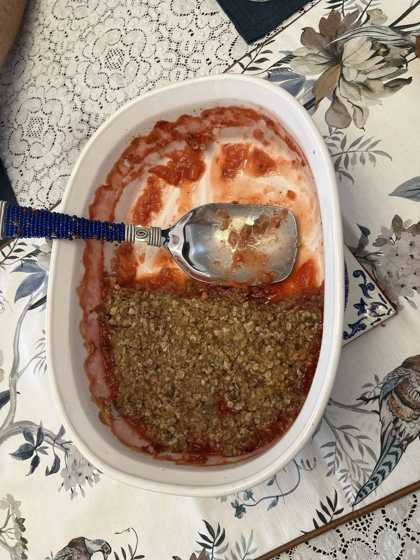
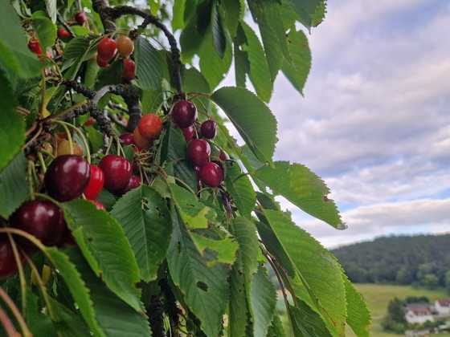
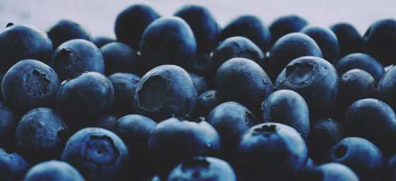
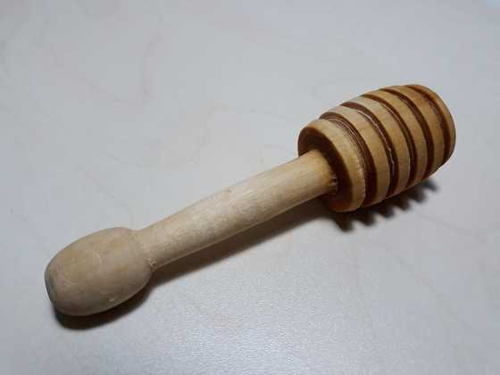

ひと息つける場所
買い物のあとに立ち寄れて、テラス席で風を感じながらゆっくりできそうな雰囲気です。(来店の感想を想定した創作です)
cafe TABIBITONOKI / 奄美大島・龍郷町
旅の途中も、島の暮らしの合間も。ほっとひと息つける木陰のようなカフェ。

タビビトノキ奄美(cafe TABIBITONOKI)は、鹿児島県大島郡龍郷町中勝、ショッピングセンター「ビッグツー」の敷地内にあるカフェです。奄美空港から車で約30分の場所にあります。
「旅人と地元の方々が集う癒しのカフェ」と紹介されており、奄美大島の食材を使った料理やドリンクが楽しめること、落ち着いた店内とテラス席があることが公開情報から確認できました。
店名の意味や由来、オーナーの想いについては公開情報から確認できていません。このページのコンセプトは、店名の「旅人」という言葉と上記の紹介文から組み立てたイメージです。




奄美の食材を使った料理やドリンク、「グリルドチーズサンド+チップス」などの軽食やフレンチトーストなどの手作りスイーツがあると紹介されています。

詳細は準備中です。

詳細は準備中です。

詳細は準備中です。

詳細は準備中です。





価格・営業時間・定休日・電話番号は準備中です。営業時間はビッグツー案内で10:00-18:00、不定休と紹介されていますが、情報源により異なるため、最新情報はInstagramでご確認ください。
以下は文章のイメージ例であり、実在のお客様の声ではありません。
買い物のあとに立ち寄れて、テラス席で風を感じながらゆっくりできそうな雰囲気です。(来店の感想を想定した創作です)
奄美の食材を使った軽食やデザートが気になります。次は旅の合間に寄ってみたいです。(創作です)
空港から車で向かう途中、のんびり過ごせるカフェがあると嬉しいです。(創作です)